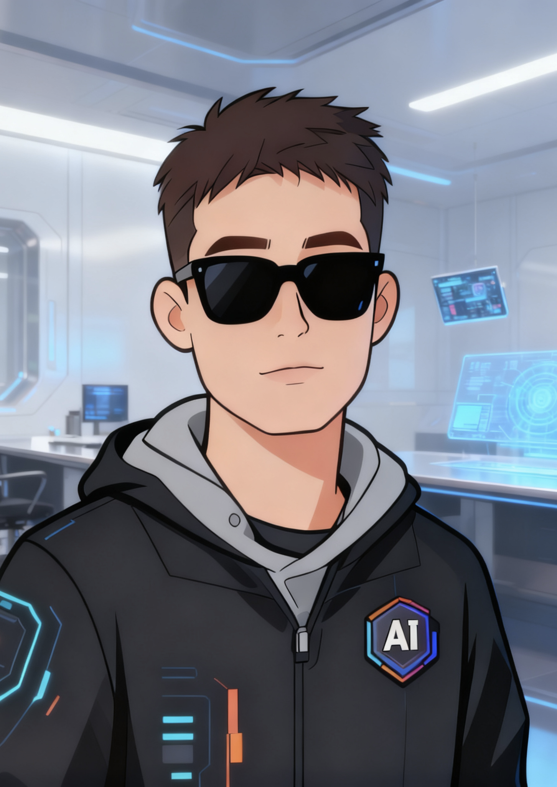

01
CODEX SKILL · OPEN SOURCE
Context Capsule
把长对话整理成紧凑、可审阅的上下文胶囊，让后续 AI 协作者快速恢复目标、决策、进度和下一步。

ABOUT
我关注如何让人工智能系统更高效、更可靠，也更容易进入真实应用场景。
目前的兴趣集中在大语言模型轻量化与压缩、AI 系统，以及人工智能与物联网的结合。我也喜欢把研究想法整理成可复用的工具和开放项目。
SELECTED WORK
FIELD NOTES
MODEL COMPRESSION
ZeroQ 复现中的关键教训：先检查损失尺度与归一化，再评估位宽；分母接近零时，相对误差可能放大噪声，低位量化也需要处理离群值。
TRAINING SYSTEMS
报错位置往往只是最后一根稻草。结合分配器快照、计算图引用和迭代峰值，分辨真实容量不足、碎片化与意外保留，再选择优化手段。
VISION & INTERPRETABILITY
从 patch token 还原 CLS 注意力热图，观察主体、边缘和背景的响应，让可视化成为模型调试与失败案例分析的入口。
CONNECT